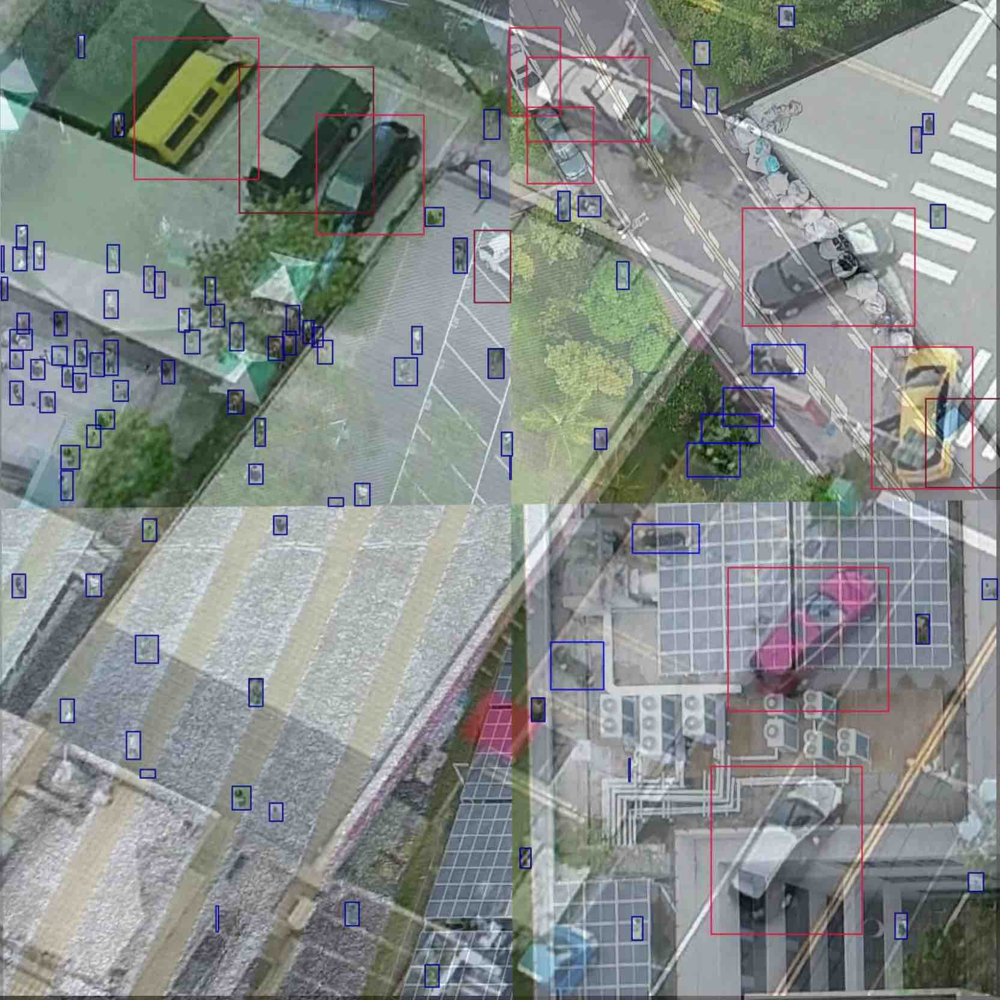
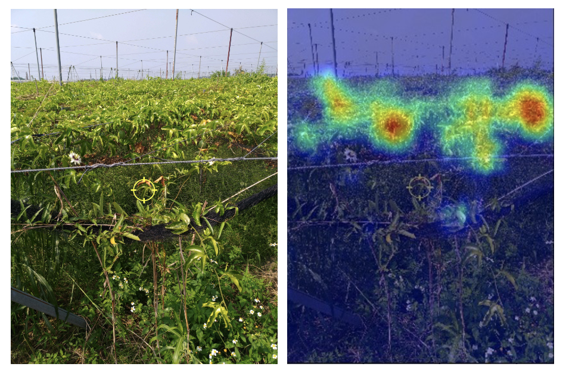
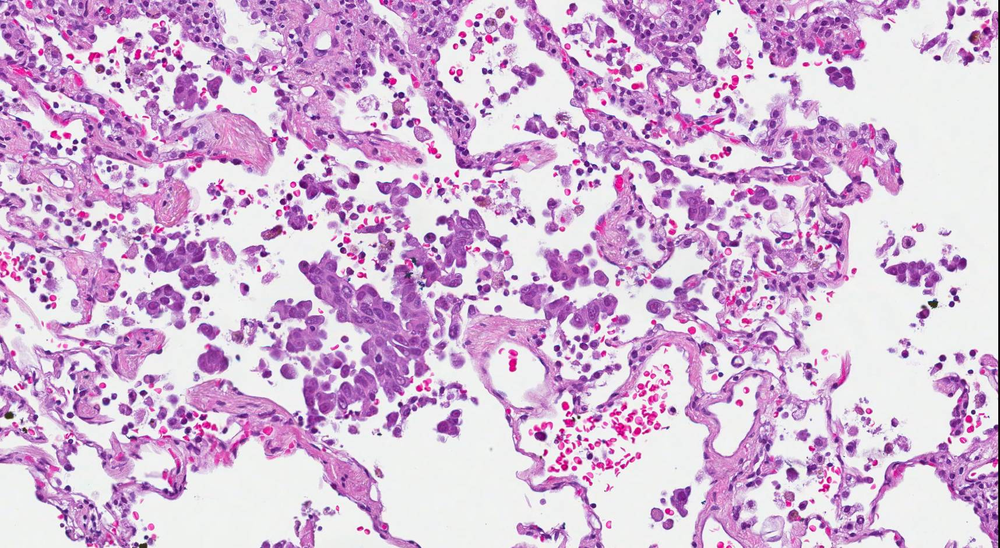
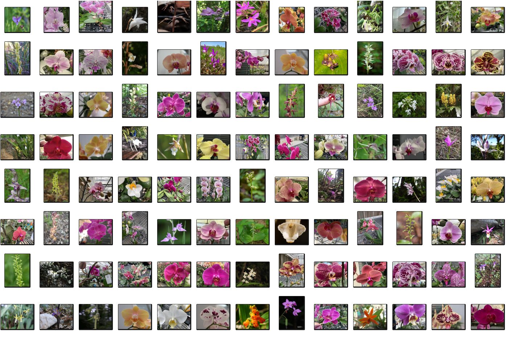
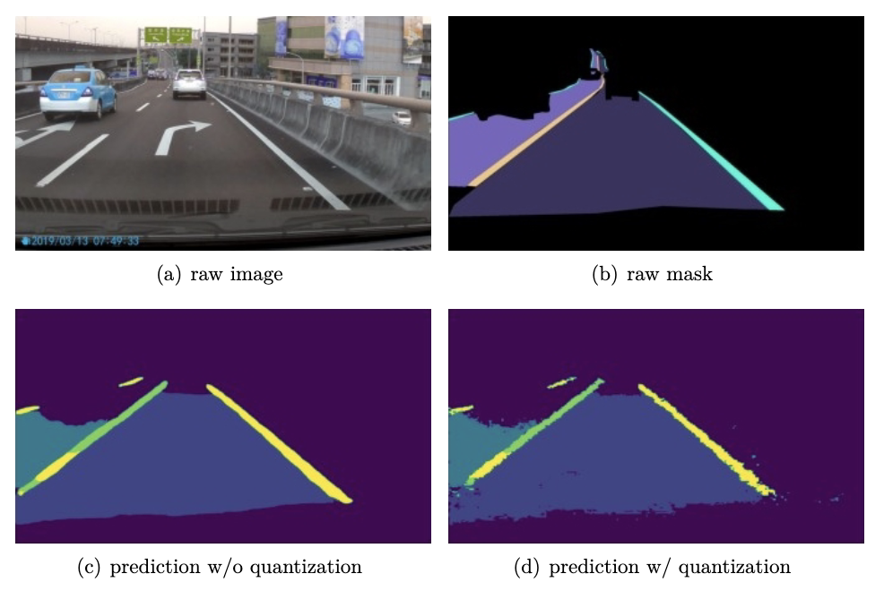
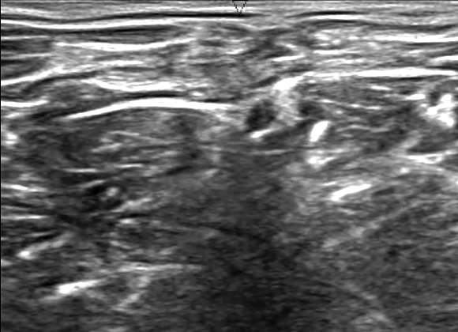

Projects
Tags
GANLAI: A Multimodal AI-Driven Virtual Reality Boxing Game Prototype for Stress Relief
OpenHCI Workshop, 2025 (Accepted to TAAI 2025)
TL;DR
GANLAI is a multimodal AI-driven VR boxing exergame that transforms exercise and emotional data into personalized narrative feedback for stress relief and reflection. By visualizing stress as in-game opponents and generating post-game encouragement and insights, it bridges immersive gameplay with real-world emotional processing.
DiffMusic: A Zero-shot Diffusion-Based Framework for Music Inverse Problem
Deep Learning for Music Analysis and Generation Final Project, 2024
Taiwan-LLM Tutor: Revolutionizing Taiwanese Secondary Education with Large Language Model
Applied Deep Learning Final Project, 2023
Multimodal Pathological Voice Classification
AICUP, 2023
Optimizing Marketing Strategies and Data Analysis for Bag Brand
TMBA Final Project, 2023
A Small Object Detection Framework for Unmanned Aerial Vehicles Images
AI CUP, 2022
TL;DR
We developed a state-of-the-art one-stage detection model as the baseline framework for the competition, with the goal of accurately detecting small objects. As a result, we achieved a top 5 ranking in the competition with a public score of 0.7394 and a private score of 0.7550.

Crop Image Recognition
AI CUP, 2022
TL;DR
We trained EfficientNet and Swin Transformer model, incorporating auto-augmentation techniques to enhance dataset diversity. Applied TTA and ensemble strategies, achieving a public ranking of 9th and a private ranking of 8th, with scores of 0.9329 and 0.9344, respectively.

Explainable Information Tagging for Natural Language Understanding
AI CUP, 2022
TL;DR
We constructed an explainable deep learning model for a NLP task by converting it into a summary task. We applied the T5 model to two datasets with different pre-processing methods and surpassed the original data's baseline. We achieved a public score of 0.801772 and a private score of 0.85190.
Contour Segmentation for Spread Through Air Spaces in Lung Adenocarcinoma
AI CUP, 2022
TL;DR
We developed a UNet-based model with a diverse backbone, addressing the imbalance of foreground and background through a combination of DiceLoss and Focal Loss. Our post-processing strategies improved accuracy, resulting in a 3rd place public ranking and 16th place private ranking, with scores of 0.9194 and 0.9109 respectively.

Supervised Learning for Few-Shot Orchid types Classification with Prior Guided Feature
AI CUP, 2022
TL;DR
We developed a few-shot learning approach to accurately distinguish visually similar orchid species. Using various models, data augmentations, and optimization techniques, we ensembled top predictions, achieving a Macro-F1 score of 0.9115 (public) and 0.8096 (private), ranking 15th out of 743 teams.

MediaTek Low-power Segmentation Competition
Machine Learning Final Project, 2022
TL;DR
We proposed a lightweight semantic segmentation model optimized for embedded systems and traffic scene analysis in Asian regions. The model balances accuracy, low power consumption, and real-time performance, designed for MediaTek's Dimensity Series platform. Achieved a public test score of 0.5624.

Ultrasound Nerve Segmentation
VRDL Final Project (Kaggle), 2021
TL;DR
We propose a deep learning method for ultrasound nerve segmentation using UNet with an EfficientNet backbone. Two novel techniques, Erosion Mask Smoothing (ELS) and adaptive Single Model Ensemble (ASME), improved performance. Achieved a private test score of 0.7234, surpassing the baseline.

Low Rank Matrix Factorization for Recommender System
Introduction to Scientific Computing Final Project, 2021
Sentiment Analysis of Food Reviews on Yelp Platform
Introduction to Data Science Final Project, 2021
Solving the Biharmonic Equation by Deep Neural Network
Numerical Partial Differential Equations Final Project, 2021
3D Shape Morphing Animation based on Poisson Image Editing
3D Computational Geometry Final Project, 2021
Mean Curvature Flow on Graphs for Image Denoising
Image Processing with Partial Differential Equations Final Project, 2020
Online Dictionary Learning for Image Inpainting
Optimization for Data Science Final Project, 2020
Variational Models and Numerical Methods for Image Processing
NCTS-USRP Final Project, 2020